Deepdive Marketing
150K+ people follow a marketing page that runs itself. I didn't hire a team for it. I wrote one.
Open in the full siteDeepdive Marketing on InstagramDeepdive Marketing blogDeepdive Marketing on LinkedIn
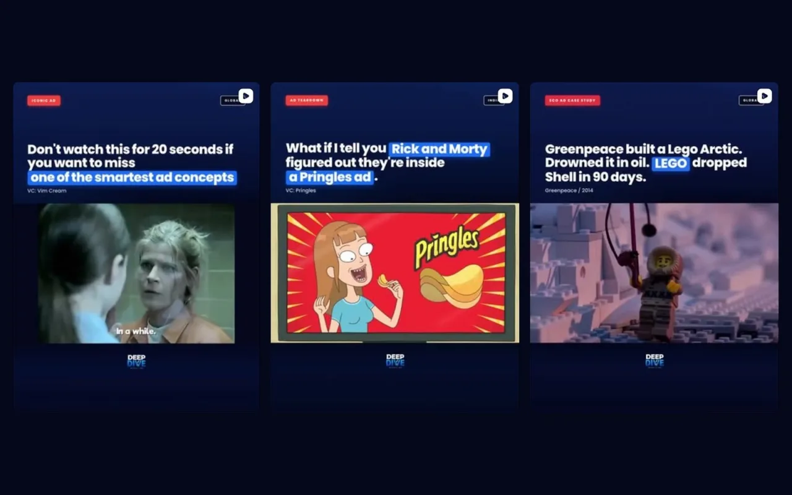
About Deepdive Marketing
Deepdive Marketing picks apart ads, brands and the money behind them, for 150K+ marketers, founders and operators on Instagram. Nobody sits at a desk making those posts. One server does, every single day.
At 11:30 every morning the blog fires up. It finds the story, writes the teardown and puts it live. That post kicks off LinkedIn: at 6:30 pm the page drops a teaser with its own designed card, in one of four looks on rotation so the feed never repeats itself. Instagram runs on its own track, cutting reels overnight and posting them on schedule.
I set the rules and I check in. The machine does the rest, and it has never once asked for a day off.
Facts
- Kind
- Marketing autopilot
- Status
- Live
- Role
- Built the whole machine. It finds the story, makes the post and ships it on all three channels.
- Followers
- 150K+
Where it runs
Instagram
150K+ followers, and the posts make themselves. The best reel, Pringles x Rick and Morty, pulled 1.33M views.
Blog
One long read a day on why an ad worked. It writes itself, publishes itself, then tells LinkedIn about it.
LinkedIn
Every blog post turns into a LinkedIn post at 6:30 pm with its own designed card. Four looks on rotation, so it never posts the same face twice.
Screens
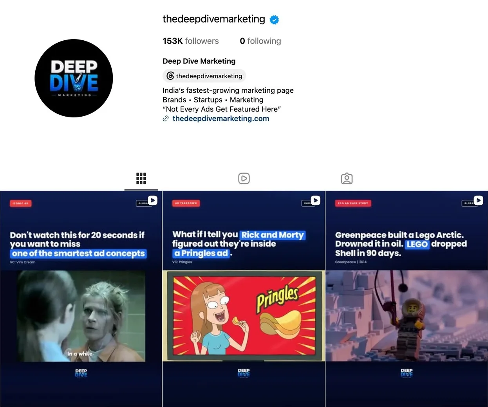
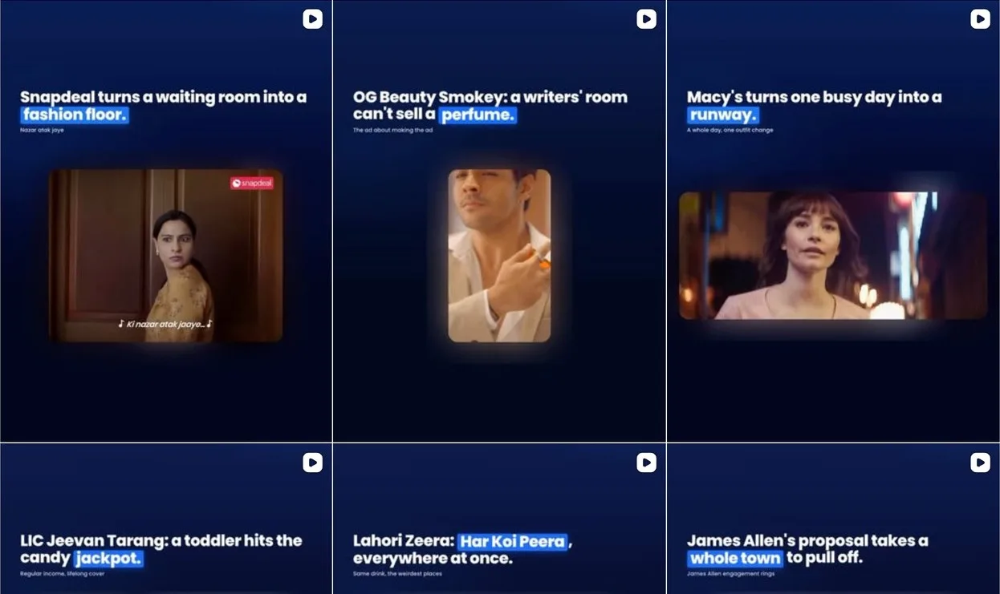
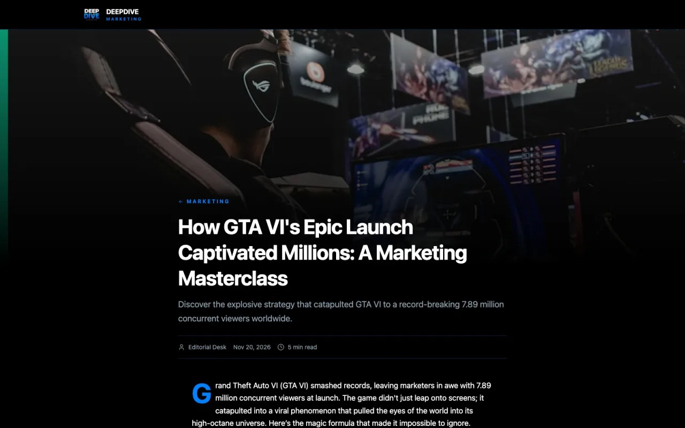
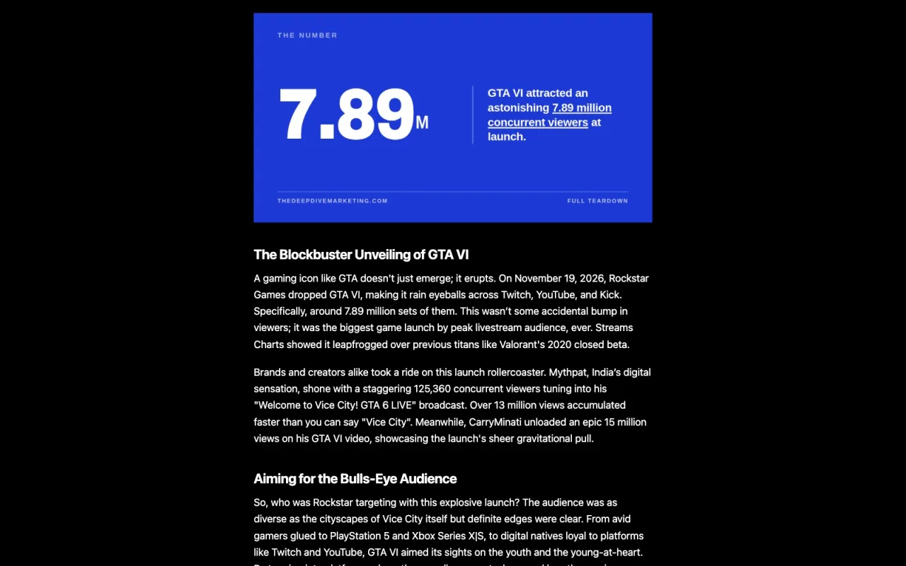
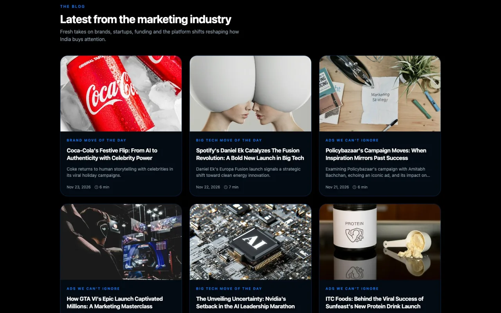
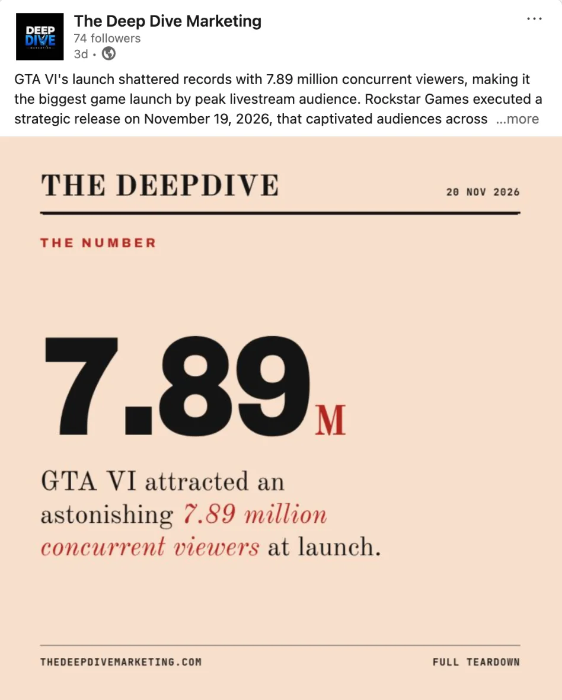
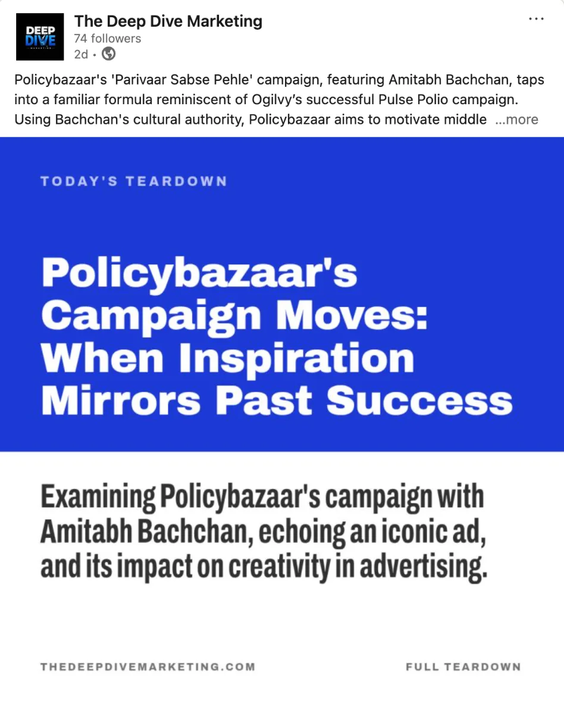
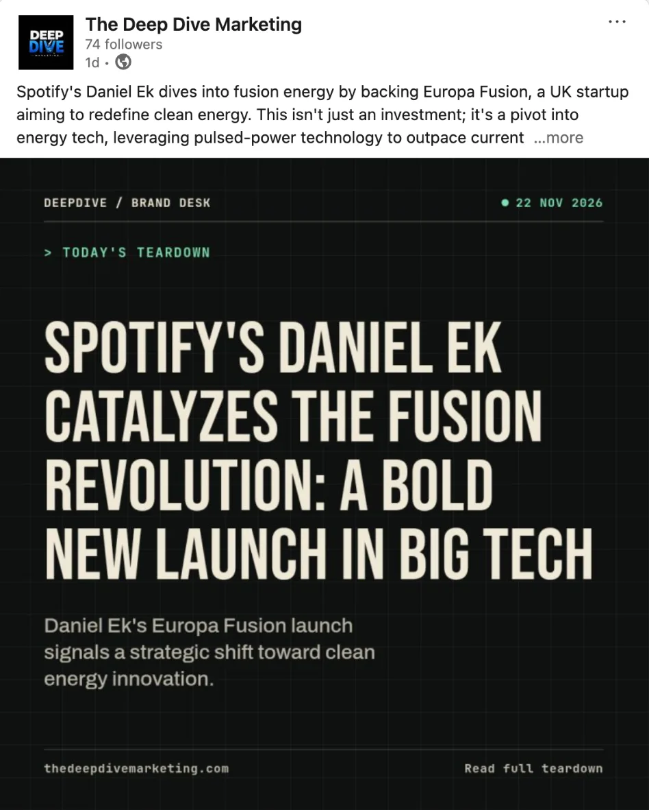
Behind the scenes
The machine was never the hard part. It posted 10 a day without me. The data said 3 posts out of 420 got almost all the shares, and the format I posted most was the weakest one. Volume doesn't fix a dull post. Now an empty slot beats a mid post.
The numbers
- posts published in the first 8 weeks (390 reels, 155 carousels, 188 statics)
- 733
- views on the best reel, Pringles x Rick & Morty
- 1.33M
- organic views across 420 posts in nine weeks (Jul 4 to Sep 6)
- 2.19M
- posts that carried 88.5% of all shares
- 3 of 420
- of engagement came from the US, which is 0.5% of followers
- 24.7%
- from 'go' to a reel being live on Instagram on the first run
- ~50s
How it was built
- Channels
- Instagram @thedeepdivemarketing, a daily blog, and the Deep Dive Marketing LinkedIn page
- Team
- Me on the build, my partner Jay on manual posts through a small publish API
- Running cost
- About Rs 712 a month in model spend for the video pipeline
- Reel layout
- Six versions. v4 dark letterbox, a white editorial v5 that got reverted, then v6 clean with no logo on the frame
- Approval
- Full autopilot, no human gate. Filters do the job a reviewer would
Built with
Timeline
- Spec written, first Groww prototype card rendered
- v1 yellow-and-black static templates
- Dashboard, cost caps and judge pipeline done
- First automated reel goes live (Fevicol)
- Full video pipeline: discovery at 2am, render at 6am, publish on slots
- First proper teardown of 733 posts
- LinkedIn autopilot live
- Celebrity ad-film pipeline live
- v6 clean reel layout
- Quality gate added; teardown format killed
How it changed
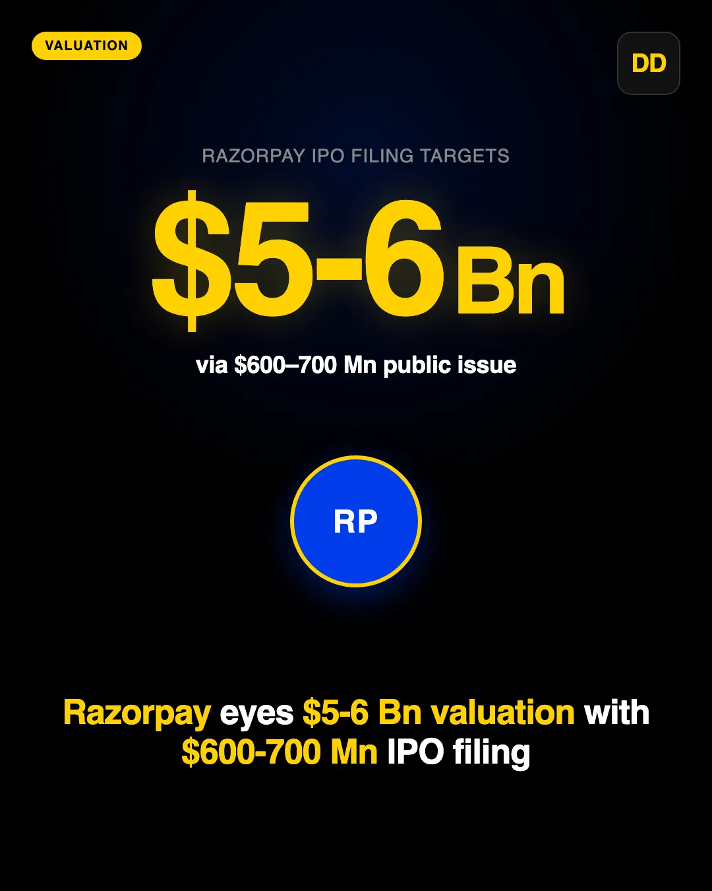
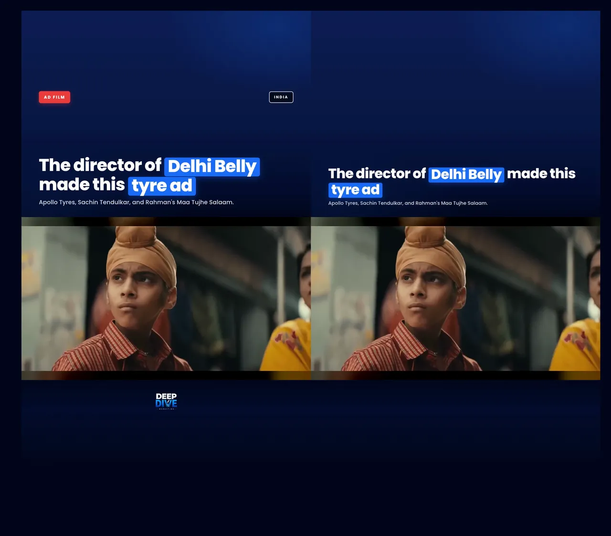
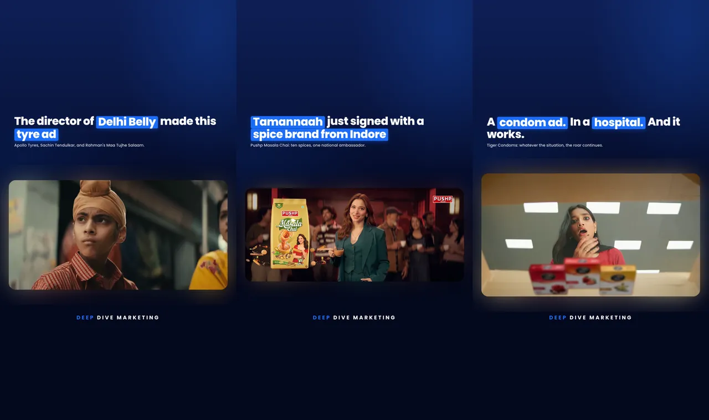
More software
- The SportifiedIG autopilot
- Spectra MuseumMuseum website
- sortedMac app
- SparksLighting planner for DOPs
- Retain+Retainer tracker
- CravAcheGame
- Vibe Raas LEDLED visuals
- Shivasva LifespaceReal-estate website
- Shelter Property Expo 2026Event website
- Vibe Raas TicketsTicket system
- Page 22Game
- ClapperOn-set app
- Fitkit ProPersonal health app
- Fourside StudiosBilling software
I also make films. See the media work, or go back to Kirtan Purohit's home page.